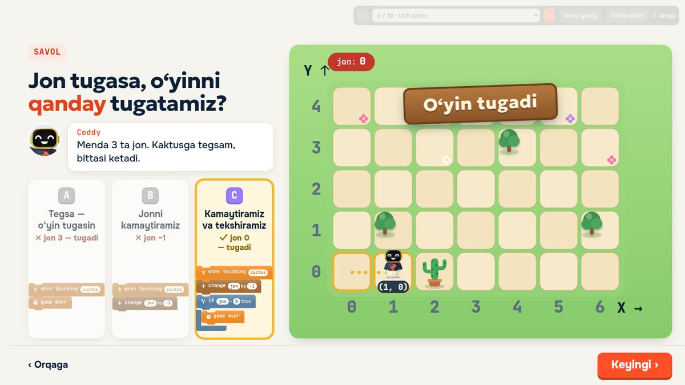
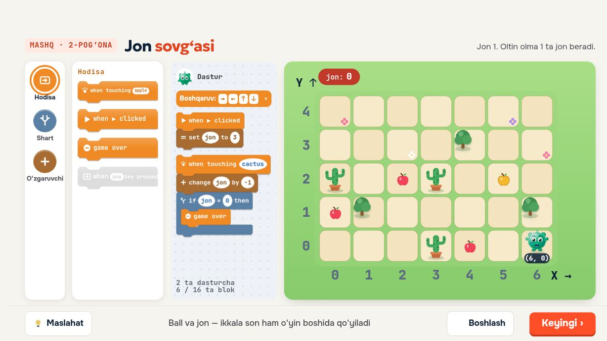
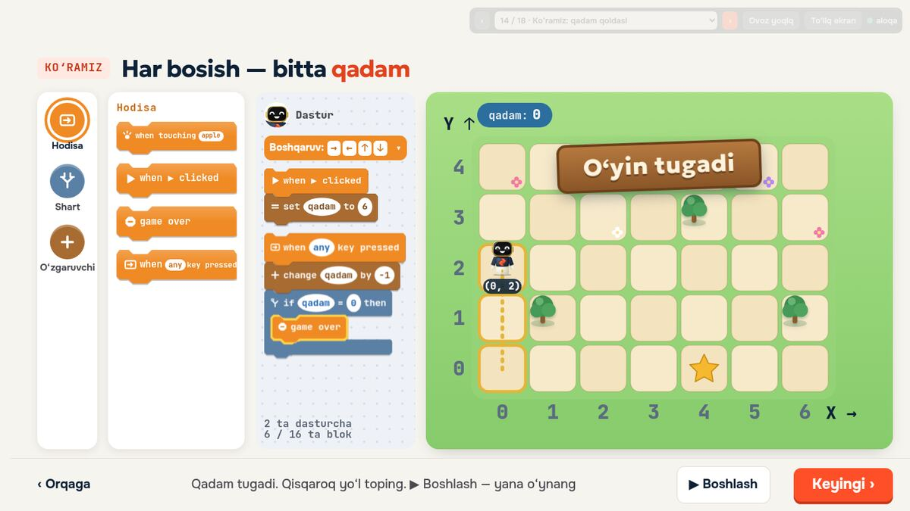
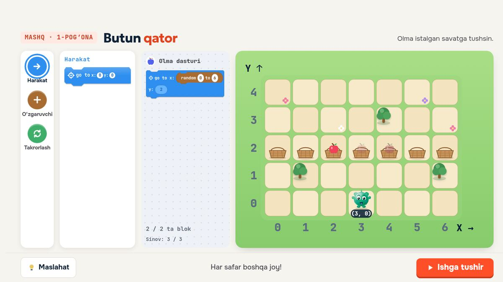
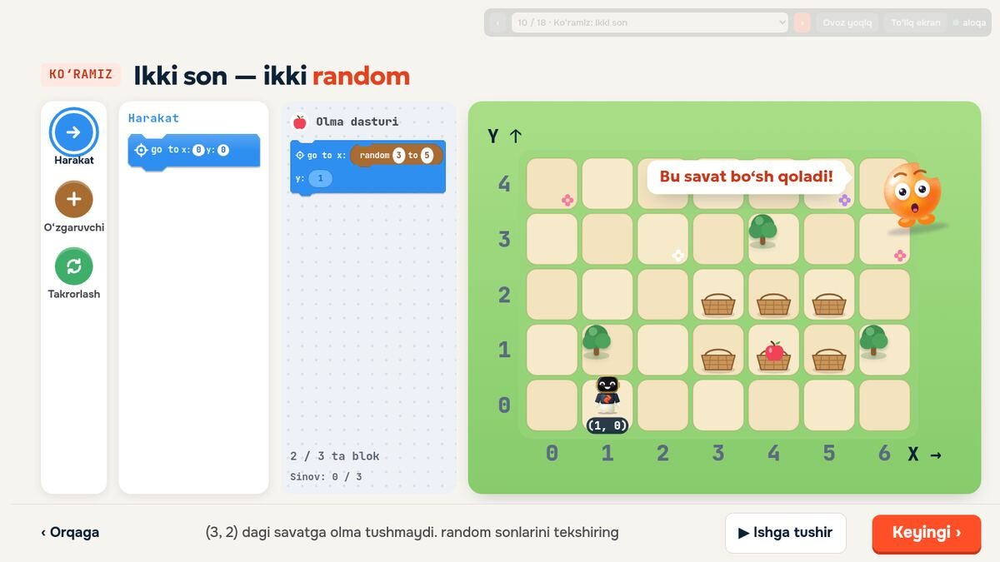
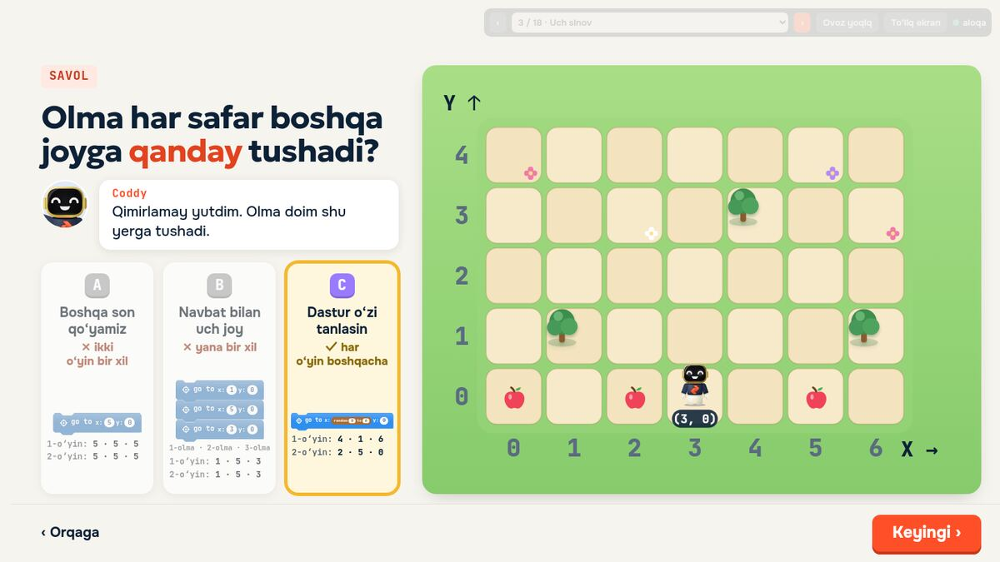
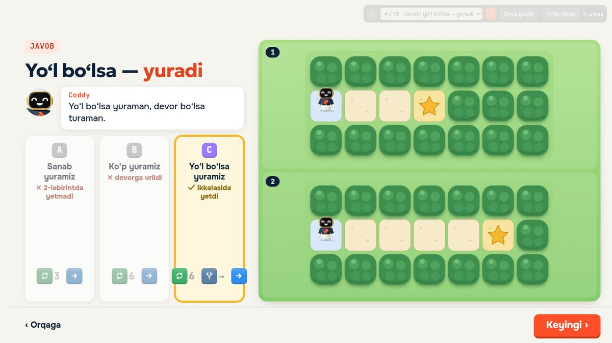

1–10-dars tayyor, 11–13 ko‘rikda
7-versiya (21.11 tun): Siz uxlayotganingizda avtopilot ishladi: 11 «O‘zgaruvchi: ball», 12 «Jon va qadam», 13 «Tasodifiy son» qurildi va hamma darvozadan o‘tdi; 1–13 regressiyasi — oltin namunalar bilan. Qarorlar tavsiya bo‘yicha qilingan — pastda ko‘rib chiqing. QA saytida 11–13 «ko‘rikda». 14-dars boshlanmadi (sabab — pastda). 9–10 (6-versiya): 9-dars «Labirint o‘yini 1» va 10-dars «Labirint o‘yini 2» qurildi va hamma darvozadan o‘tdi. Siz «mustaqil tayyor darajaga keltiraylik» dedingiz — quyidagi qarorlarning hammasi tavsiya (A) bo‘yicha qabul qilindi, 9–10 uchun oltin namunalari yozildi, QA saytida «tayyor». Biror qarorni o‘zgartirmoqchi bo‘lsangiz — B ni tanlab, javobni chatga yuboring.
Oldingi savollarga (1–8-dars, 11–14 manbalari, U·1, U·2) javob berilgan — ular pastda yig‘ilgan, javob matniga qo‘shilmaydi.
Labirint o‘yini 1 — qoida: yo‘l bo‘lsa, yuradi


if path … then. To‘rt dasturcha ikki ustunda — bitta ustunga o‘qiladigan masshtabda sig‘masdi.

Sinovda topilib tuzatilgan (9-dars)
- Dasturchalar ustma-ust tushardi (Blockly sig‘maganini itarardi) — ikki ustun, ro‘yxat ochiq bo‘lsa qayta joylash kutadi.
- 16 blokda Ortiqvoy «Joy qolmadi!» chiqmasdi; tasma «4 ta dasturcha» va «12 / 16 ta blok» endi ikki qatorda.
- Ro‘yxatdagi «Yulduz» 1-bekatdagi har yutishda ✓ bo‘lib qolardi — endi faqat ro‘yxat bor o‘yinda.
9·1. Huk sarlavhasi qisqardi: «O‘yin to‘xtamasin. Qanday qilamiz?»
Manbadagi «Adashsangiz ham o‘yin to‘xtamasin. Qanday qilamiz?» proyektorda uch qator bo‘ldi (huk savoliga ikki qator ruxsat). «Adashgan bosish» fikri Coddy gapida qoldi: «Bitta adashgan bosish — o‘yin to‘xtadi. Hammasi boshidan!».
9·2. Dasturchalar ikki ustunda (9–10-darsda dastur ustuni kengroq, labirint ~120 px tor)
To‘rt qoidali dasturcha (12 blok) bitta ustunga faqat ~6 px yozuv bilan sig‘ardi. Suratda — 11-qadam.
9·3. «O‘ynab ko‘rsat» — bitta tugma
Manbada ustoz avval «▶ Boshlash», keyin «O‘ynab ko‘rsat» bosardi. Bitta «▶ O‘ynab ko‘rsat» o‘yinni boshlab, 11 bosishni o‘zi bajaradi; bosilgan strelka sahnaning o‘ng yuqori burchagida bir zum ko‘rinadi.
9·4. Ro‘yxat «O‘yiningizda:» — javon ustunining pastida; «Yulduz» faqat 3-bekat o‘yinida
9·5. 9-dars tasdig‘i
Labirint o‘yini 2 — o‘z labirintingiz, ikki daraja


Sinovda topilib tuzatilgan (10-dars)
- O‘lchovlar (yo‘l, burilish, boshi berk, eshik, kalit, borib qaytish) ikki xil usulda hisoblanib solishtirildi — manbadagi 15 labirint va 7 namunaning hammasi mos.
- Muammocha tartibi: eshik yo‘lni to‘smasa — «Eshik keraksiz!» (kalit bo‘lmasa ham), keyin «Kalit qani?», keyin «Yo‘l yo‘q!». Manbadagi «yo‘l o‘zgarmaydi» noto‘g‘ri edi (12 qadam bo‘ladi) — tuzatildi.
- Asboblar bosilmasdi (qobiqning tasma tugmalari bilan bir xil belgi) — tuzatildi.
10·1. Ikki sarlavha qisqardi
Huk: «O‘yinga ikkinchi labirintni qanday qo‘shamiz?» → «Ikkinchi labirintni qanday qo‘shamiz?» (uch qator bo‘lardi). 16-qadam: «Do‘stingiz o‘yinini o‘ynang» → «Do‘stingiz o‘ynasin» (qadam nomi bilan bir; chap ustunga sig‘madi).
10·2. Huk A kartasini ham dvigatel o‘zi sinaydi
Manbada ustoz A da → ni qo‘lda bosardi. Endi uchala karta bir xil: «Keyingi» — dvigatel o‘ynaydi, natija kartada (A da Bo‘shvoy «Men nimani kutaman?»).
10·3. «Labirint · Bloklar» almashtirgichi — oila tugmalari qatorida birinchi «Labirint»
Labirint yasash ekranlari «Labirint» tanlangan holda ochiladi; boshqa oila tanlansa — bloklar (dasturni tuzatish uchun).
10·4. «Oz qoldi!» ishoralari har shart uchun o‘z soni bilan
- «Devor: 4 ta. Kerak: kamida 6» · «Yo‘l: 12 qadam. Kerak: kamida 14» · «Burilish: 3. Kerak: kamida 5»
- «Boshi berk yo‘l: 1. Kerak: kamida 2» · «Borib qaytish: yo‘q. Kalitni yo‘ldan chetga qo‘ying» · «Eshik qo‘ying — yulduzga yo‘lni to‘ssin»
10·5. «Do‘stingiz o‘ynaydi»: bitta tugma; do‘st «o‘ynadi» = kamida bir qadam yurdi; doskada son
10·6. Bolaning 2-darajasi va dasturi — noutbukda saqlanadi (serverda — LMS bilan, modul tugagach)
10·7. 10-dars tasdig‘i
O‘zgaruvchi: ball — kompyuter sonni eslab qoladi


Qurishda topilib tuzatilgan (11-dars)
- Manbadagi har jadval (9 o‘yin maydoni, eng qisqa yo‘l, har yechim va xato varianti, 5 ta oldindan aytish) mustaqil hisob bilan tekshirildi — hammasi to‘g‘ri; keyin o‘sha jadvallar haqiqiy ekranlarda yurgizildi.
- Javondagi «when touching apple» bloki ustunga sig‘masdi, kapsula «Y ↑» yozuvini yopardi — tuzatildi (setka toza).
- Dvigateldagi hodisa bloklari umumlashtirildi (strelka, olmaga tekkanda, ▶ bosilganda) — 1–10-dars natijasi o‘zgarmadi (oltin farq 0).
11·1. 1-bekatda ball har o‘yin 0 dan boshlanadi; 10-qadamdan boshlab saqlanadi
Manbada son doim saqlanadi. Lekin 1-bekatda set bloki hali yo‘q: birinchi urinishda adashgan bola (masalan, +1 qoldirib ball 4 olgan) qayta o‘ynasa 4 + 8 = 12 bo‘lib, pog‘onani hech qachon yecha olmasdi. 1-bekatda baribir birinchi yutishdayoq keyingi pog‘ona ochiladi — saqlanish u yerda ko‘rinmasdi. «Ball 6» 10-qadamda ustoz o‘yinida ko‘rinadi.
11·2. Boshqaruv — dastur tepasidagi bitta qator, bosilsa to‘rt dasturcha rasmi ochiladi
«Boshqaruv: → ← ↑ ↓» — bloklar sanog‘iga kirmaydi; o‘yinda bosilgan strelka qatorda bir lahza yonadi. Ochilganda — o‘qish uchun (o‘zgarmaydi).
11·3. Javon: 1-bekatda set va when ▶ clicked ko‘rinadi, lekin yopiq; 3-bekatda javon butunlay yopiq
11·4. Oldindan aytish: «Avval sonni tanlang» — xira tugma bosilganda; boshida ishora «Dasturni o‘qing: oxirida ball nechchi bo‘ladi?»
11·5. ★ «O‘z o‘yiningiz» — uchinchi «Oz qoldi!» bandi qo‘shildi
Manbada ikki band bor edi («O‘yin boshida ballni qo‘ying» · «Oltin olmaga ham dasturcha qo‘ying»). Shart to‘rtta: set, ikkala olma turi, yutish, ball 0 dan katta — oxirgisi uchun: «Olmalar ball bersin — change blokidagi sonni tanlang».
11·6. 11-dars tasdig‘i
Jon va qadam — shart o‘zgaruvchini tekshiradi



Qurishda topilib tuzatilgan (12-dars)
- Blokdagi ro‘yxat (o‘zgaruvchi, son) bosilganda tanlov tushib qolardi — keyingi blok if ichiga emas, keyiniga tushardi. Dvigatelda tuzatildi (hamma darsga tegishli; 9–10 sinovlari yashil).
- Manbadagi o‘yin jadvallari mustaqil hisob bilan tekshirildi (kaktusga tegmagan eng qisqa yo‘l, o‘yin qaysi bosishda tugashi) — 77/77.
12·1. Sinov pog‘onasida (15 · 1) yulduzga yetish — yechim emas
Qadam katta qo‘yilsa, bola yulduzga yetib «yutardi» — lekin topshiriq «5-bosishda o‘yin tugasin». Endi: «Oz qoldi!», «Qadam 5 bo‘lsin: 5-bosishda o‘yin tugasin».
12·2. Kapsulalar rangi: ball — jigarrang, jon — qizil, qadam — ko‘k
12·3. Natija: «ta shart qo‘ydi» va «ta o‘zgaruvchi ishlatdi» — eng ko‘pi (yig‘indi emas)
Dastur pog‘onadan pog‘onaga o‘tadi — yig‘indi bitta shartni o‘n marta sanardi. «ta o‘yin yutdi» — faqat yutish pog‘onalari.
12·4. 12-dars tasdig‘i
Tasodifiy son — dastur o‘zi tanlaydi



Qurishda topilib tuzatilgan (13-dars)
- Javondagi random bosilmasdi — blok belgisi qobiqning tasma tugmalari belgisi bilan bir xil edi (10-darsdagi asboblar xatosi bilan bir sinf) — tuzatildi.
- Tayyor go to (random bilan) dastur ustunidan chiqib, Y katagini bosib bo‘lmasdi — X va Y ikki qatorga, masshtab chizilgandan keyin.
- Manbadagi hamma da’vo (savatlar, xato variantlari, «uch marta — 2 xil joy» ehtimoli) mustaqil hisoblandi — 70/70.
- Internet yo‘li (lokal Upstash o‘xshatmasi): 11–13 to‘liq dars sinovlari ustoz + ikki bola alohida brauzerda — 61/61, 54/54, 48/48. Haqiqiy saytda Upstash hali ulanmagan (/api/sinf → «redis yo‘q») — ikki qurilmali dars uchun Vercel’da Upstash integratsiyasini siz qo‘shasiz.
- Suratlarni ko‘z bilan ko‘rganda: huk C kartasidagi blok karta chetidan chiqardi; «Qahramon:» qatorining ▾ belgisi qirqilardi (11–12-darsning «Boshqaruv:» qatorida ham) — tuzatildi. Setka darvozasi buni tutmasdi — endi «ichidan oshish» tekshiruvi ham bor.
13·1. go to — yangi blok: X va Y son katagi (13-darsdan); 3–10-darsdagi go to o‘zgarmadi
Katakdagi son ro‘yxatining oxirida «random» — tanlansa, katakka random 1 to 10 ulanadi; ✕ bilan olinsa — son qaytadi. Javondagi random — tanlangan (yoki oxirgi) go to ning bo‘sh katagiga.
13·2. Huk (2-qadam) — «olma doim (3, 0) ga» natija rasmi bilan (animatsiyasiz)
13·3. repeat sonida random yo‘q (manbada topshiriq yo‘q)
13·4. 13-dars tasdig‘i
Yangi darvoza topdi — tegmadim

8·1. 8-darsda tuzataymi?
Faqat shu qator kichrayadi (bitta CSS qoida), boshqa hech narsa o‘zgarmaydi; 8-dars oltin namunasidan 3–4 surat qayta yoziladi. Dars tasdiqlangan — shuning uchun so‘rayapman.
Xatoni topish — faqat manba tekshirildi
14-dars — amaliyot: 9 ta xatoli dastur (takrorlash, kulrang rasm, ikki labirint, o‘yin, random — hammasi birga), yangi «Bitta qadam» tugmasi va «aynan bitta xato» tekshiruvi. Qurishni boshlamadim: dvigatelga ikki katta yangilik + besh xil sahna + 1–13 regressiyasi 10:30 gacha sifatli sig‘masdi, chala dvigatel qoldirmadim. Qilingani — manbadagi har dastur mustaqil hisob bilan tekshirildi (68/68) va 3 joy tuzatildi. Quyidagi savollarga javob bersangiz, keyingi seans darrov quradi.
Manbada tuzatilgani
- 8 · 3 va 11 · 1 — manba «faqat shu tuzatish» degan, lekin ikkinchi yo‘l ham ishlaydi (go to dan keyin → qo‘shish; birinchi repeat 2→1). Ikkalasi ham haqiqiy tuzatish — pog‘ona natijani tekshiradi.
- Ustoz varag‘idagi «uch ishga tushirishda 7 chiqishi — 41%» → 42%.
14·1. Dasturdagi «5 ta dastur» — 9 ta pog‘ona (har biri bitta xatoli dastur) + 3 ★; natija — kamida 5 tasi tuzatildi
14·2. «Bitta qadam» tugmasi — «▶ Ishga tushir» yonida, keyingi darslarda ham qoladi
Har bosish — bitta blok; qahramon kulrangdan chiqqan qadamda to‘xtaydi, blok belgilanadi. Bu dvigateldagi eng katta yangilik — 15-darsdan keyin ham hamma studiyada bo‘ladi.
14·3. ★ «Topishmoq» — bola bitta xatoli dastur tuzadi, dvigatel «aynan bitta xato»ni o‘zi tekshiradi
14·4. 3-bekatda uch xil sahna — ikki labirint, o‘yin, savatlar
Oltin namunalari — vaqt poygalari tuzatildi
5-dars: bola pog‘onani yechgach 1,4 soniyada keyingisi o‘zi ochilardi va CPU band bo‘lsa stsenariyning keyingi qadamidan keyin ekranni surib yuborardi — eski namuna ham shu poyga bilan yozilgan ekan. Stsenariyda avto o‘tish o‘chirildi, namuna qayta yozildi, ikki solishtiruvda farq 0. 8-dars: ikki ketma-ket ijroda belgilar taymeri aralashardi — stsenariyga 1 soniya kutish; eski namuna bilan farq 0 (dars o‘zgarmagan). Dars kodiga tegilmadi.
Oldingi versiyalar (1–8-dars, 11–14 manbalari) — javob berilgan
5-versiyadagi hamma savolga javob berilgan: 3–8-dars tasdiqlandi, A·1/A·2 1–2-darsga ham, U·2 — «Sinfimiz bugun» qoladi, 11–14 manbalari qabul. Suratlar shu sahifaning eski fayllarida saqlangan (img/d3-…, d4-…, … d8-…). To‘liq yozuv — HOLAT.md, 20.11.